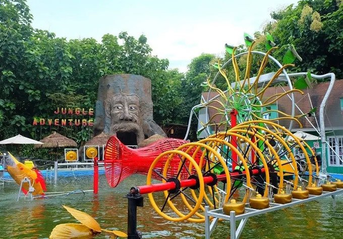

salsawisata- Eco Green Park

Eco Green Park bisa jadi pilihan wisata yang pas untuk liburan Anda bersama keluarga saat berada di Malang. Dengan konsep taman ekosistem ramah lingkungan, Anda bisa belajar sambil bermain di berbagai wahana seru.
Belajar tentang sains, burung, dan melestarikan lingkungan menjadi sangat menyenangkan di Eco Green Park Malang. Dilengkapi dengan koleksi beragam jenis burung dan tanaman, Eco Green Park kan memberikan Anda pengalaman seru tak terlupakan.
Anda bisa dengan mudah mengunjungi Eco Green Park dengan memanfaatkan paket liburan ke Bromo dari Biro Perjalanan. Namun sebelum itu, mari simak terlebih dahulu ulasan mengenai keseruan apa saja yang telah menunggu Anda di Eco Green Park Baca selengkapnya